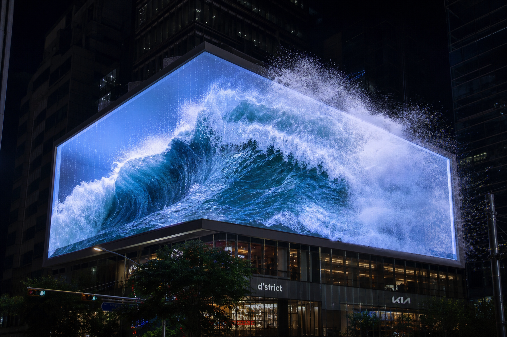
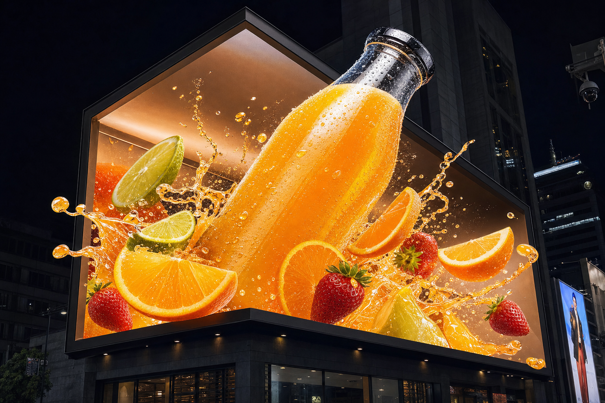

Shipped the imperfect version.
A depth-driven anamorphic billboard illusion — the kind that appears to bulge out of a corner LED screen. Two implementations, and a deliberate decision not to wait for the better one.
- Technique
- Anamorphic warp
- Depth
- Synthetic · MiDaS
- Runtimes
- Python · WebGL
- Default
- Ships fast
The illusion, briefly.
An anamorphic billboard works by rendering a scene as it would appear from one specific vantage point, warped so the flat screen reads as depth from that angle. Get the projection right and the content appears to break the plane of the display.
The Python implementation uses OpenCV remap() driven by a depth map. The browser version reimplements the same geometry in Three.js so it runs live, interactively, without a Python round trip.

Where the judgement was.
Depth can come from two places. MiDaS produces genuinely good monocular depth estimates and needs a model download, a heavier dependency chain, and real inference time. Synthetic depth — derived geometrically — is cruder and effectively instant.
The neural path produced better output. I made it optional and shipped with synthetic depth as the default, because a demo that loads immediately and looks good is worth more than one that loads slowly and looks slightly better. Anyone who wants the higher fidelity can turn it on.
The last 10% of fidelity cost more than it returned. Making it opt-in was the version that shipped.

Two runtimes, one geometry
Keeping the Python and Three.js implementations consistent meant treating the warp as a single specification rather than two codebases that happened to look similar. When the geometry changed, it changed in one described place and both implementations followed.